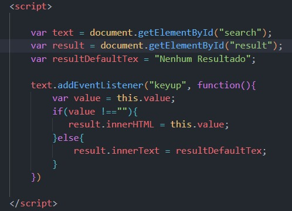

O evento onkeyup é uma função do JavaScript que é acionada quando o usuário solta uma tecla após pressioná-la no teclado. Esse evento é muito útil para executar uma ação quando uma tecla específica ou combinação de teclas é pressionada.
Foto exemplo:
Precione alguma tecla e Depois solte-a: